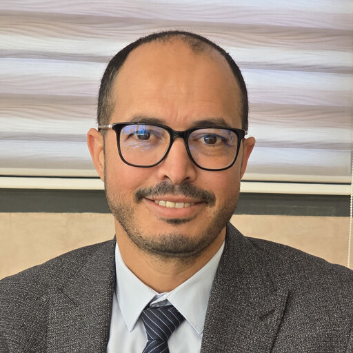

Les Intervenants

Pr. IJJAALI Mustapha
Président de l'USMBA

Pr. LAHRACH Abderrahim
Directeur de l'ENSA de Fès

Pr. CHALH Zakaria
Chef de Département Génie Industriel

Pr. HIHI Hicham
Chef de la Filière GESI
Pr. ECHKONDI Mohammed
Institut des Études Africaines (IEA), UM5, Rabat

Mr. EL GHZIZAL Abdelaziz
Enseignant-chercheur en génie électrique
Mr. BOUSSETTA Mohammed
Professeur à l'USMBA, Fès
Mme. EL FARISSI Latifa
Responsable R&D et innovation, CTPC
Mr. KABBAJ Mohammed Nabil
Professeur à la FSDM, USMBA
Mr. EL BACHTIRI Rachid
Professeur à l'EST de Fès
Mr. DEROUICH Aziz
Professeur à l'EST de Fès
Mr. Ait Ali Ali
Cadre à l'Agence Nationale de la Conservation Foncière
Mme. Ikram barki
Team Leader chez ALTEN